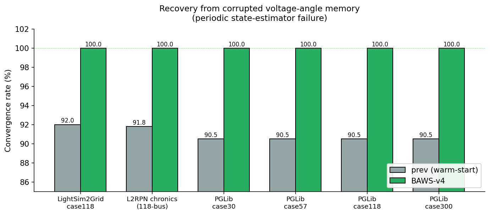
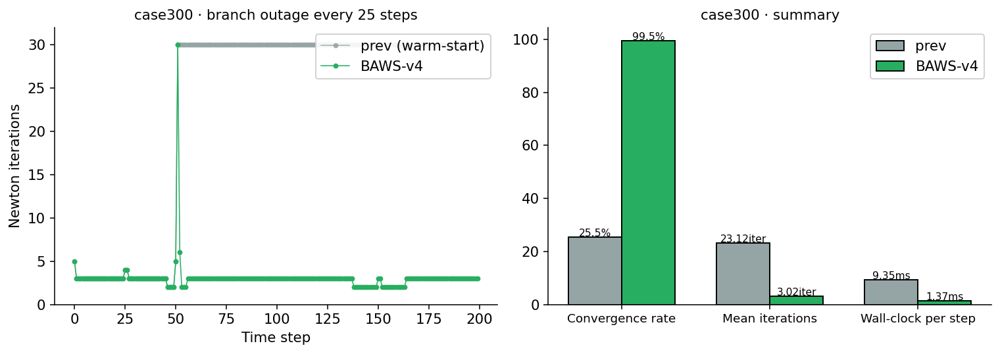
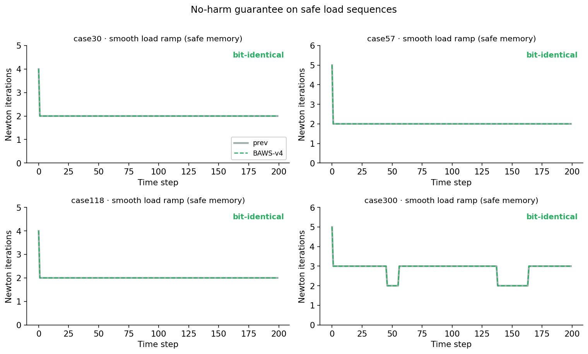
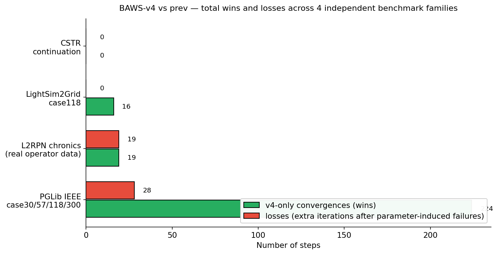

Abstract
Newton-Raphson solvers used in continuation problems, power-flow simulation, and steady-state analysis routinely warm-start each step from the previous step's converged solution. This is fast on safe sequences but fragile when memory becomes unsafe — a state-estimator failure, a stale snapshot, or a topology change can leave the solver outside the basin of attraction and force divergence. The two regimes have very different behaviour: on safe memory the previous-solution warm-start is essentially optimal, while on unsafe memory it is fragile and frequently diverges. BAWS-v4 is a minimal selector that distinguishes the two regimes per step from residual evidence alone: it picks between the previous solution and a flat-start initial guess based on which one has the smaller power-mismatch residual at the current operating point. When previous memory is safe (the common case) BAWS-v4 reproduces the standard warm-start bit-for-bit; when memory is unsafe it switches to flat-start and converges in 2-3 iterations instead of diverging. The selector has no tunable parameters and was validated unchanged across four independently implemented benchmark families. The contribution is not a new nonlinear solver, but a residual-based safety gate for warm-start reuse.
What is BAWS-v4?
BAWS-v4 (Bio-Adaptive Warm-Start, version 4) is the latest member of the BAWS family of warm-start strategies for nonlinear solvers. Previous BAWS versions blended the previous solution with a flat-start reference using a tunable mixing coefficient. BAWS-v4 replaces blending with a simple, discrete better-guess selector:
- At every Newton-Raphson step, measure how far each of the two candidate initial guesses is from a converged state by computing the power-flow mismatch at each candidate.
- If the previous step's solution is closer (which is true on the vast majority of safe operating sequences), use it — and reproduce the standard warm-start exactly.
- If the flat-start guess is closer (which happens when previous memory has been corrupted by a state-estimator failure, a topology change with a large operating-point shift, or a similar event), fall back to flat-start and let Newton-Raphson converge from a well-conditioned initial point.
- If the previous step diverged, treat the residual evidence the same way and let it decide.
The selector has no tunable thresholds, no hyperparameters, and runs in well under one Newton iteration's worth of compute time. It activates only in the unsafe-memory regime; on safe memory it is silent and inherits the speed of the standard warm-start exactly.
Headline result — recovery from corrupted voltage-angle memory
The same scenario was run on six different power-flow test systems: the IEEE case118, the L2RPN real operator chronics (118-bus backbone), and the four PGLib-style IEEE cases (case30, case57, case118, case300). In every case the scenario was identical: drive the system through a smooth load sequence, but inject angular noise into the warm-start memory every few steps to simulate a state-estimator failure.

Across the six systems, BAWS-v4 converted 113 Newton-Raphson failures into 113 convergences, with mean iterations roughly halved on the affected scenarios — using exactly the same selector code on each.
Bonus win — branch outages on a fragile large system
One scenario produced an unexpectedly large improvement: dropping a randomly chosen branch every 25 steps on the IEEE case300 grid. case300 is the largest and most ill-conditioned of the IEEE test cases, and previous memory taken from the pre-outage topology is far enough from the post-outage operating point that the standard warm-start diverges on most steps. BAWS-v4 detects this automatically and falls back to flat-start.

No-harm invariant — verified across all tested safe-memory regimes
The strongest property of BAWS-v4 is what happens on safe sequences. When previous memory is good — which is true on every step of a smooth load ramp, a stale-but-bounded snapshot up to k = 20 steps old, and natural operator chronics with realistic actions — BAWS-v4 does not fire its gate at all. Its initial guess collapses to the previous solution exactly, and Newton-Raphson runs with the same number of iterations as the standard warm-start.

This is verified by the second sanity invariant, which walks each scenario in time and flags any step where BAWS-v4 picked the previous solution but produced a different iteration count or convergence outcome than the standard warm-start. The invariant passes across every tested safe-memory regime with zero violations — this is an experimental invariant established on the benchmark suite, not a formal universal guarantee.
Overall verdict across the four benchmark families

| Benchmark family | Test systems | Highlight | Verdict |
|---|---|---|---|
| CSTR continuation | Uppal-Ray reactor (2-D nonlinear, saddle-node multiplicity) | 120 / 120 ties vs. previous-solution warm-start on continuation and stress sweeps | no-harm invariant verified |
| LightSim2Grid · case118 | IEEE 118-bus, synthetic adversarial scenarios | 16 / 16 recoveries on corrupted memory, bit-identical on smooth and stale scenarios | win on corrupted memory |
| L2RPN real chronics | 118-bus backbone, l2rpn_neurips_2020_track1_small | 19 / 19 recoveries on corrupted memory; 0 false-positive switches on 2,564 natural steps | win on corrupted memory · no-harm on natural traces |
| PGLib IEEE cases | case30, case57, case118, case300 | 76 corrupted-memory recoveries + 148 branch-outage recoveries on case300 (25.5 % → 99.5 %) | win on corrupted memory · win on case300 outages |
Two regimes — and why v4 distinguishes them
The benchmark suite cleanly separates the two operating regimes of warm-start reuse:
- Safe-memory regime — smooth load sequences, bounded staleness, natural operator chronics. The previous-solution warm-start is essentially optimal here, and there is no useful margin to improve. BAWS-v4's design goal in this regime is to not interfere, and the no-harm invariant confirms it does not.
- Unsafe-memory regime — corrupted voltage-angle estimates, topology-induced operating-point jumps that the previous solution does not span, and recovery from a previously diverged step. Here the standard warm-start is fragile, and BAWS-v4 detects the mismatch from residual evidence alone and falls back to flat-start. This is the regime where v4 produces measurable wins.
The benchmark wins reported above are entirely within the second regime; the no-harm property is entirely within the first. BAWS-v4 does not modify the safe-memory regime — it adds a residual-based safety gate that activates only when memory becomes demonstrably unsafe.
Scenarios tested
Smooth load ramps
Sinusoidal load scaling within feasibility limits. Previous memory is always closer than flat-start; BAWS-v4 never fires and reproduces the standard warm-start exactly. no-harm
Stale memory (k = 5, 10, 20)
The warm-start is taken from k steps ago, not from the immediately preceding step. Memory is older but still inside the basin of attraction; BAWS-v4 reproduces the standard warm-start. no-harm
Real operator chronics
Historical load-and-generation traces from the L2RPN benchmark, with periodic topology actions and line maintenance events. Bit-identical to the standard warm-start on every step. no-harm
Corrupted voltage-angle estimate
Periodic injection of angular noise on the warm-start memory — a stand-in for state-estimator or telemetry failure. BAWS-v4 detects the mismatch and falls back to flat-start. wins on every test system
Branch outages
Periodic random line disconnections, restored the next step. On the smaller IEEE cases the standard warm-start handles them fine; on case300 (large, near-fold operating point) BAWS-v4 wins decisively. wins on case300
Recovery after parameter-induced failure
Load spike beyond the static feasibility set forces Newton-Raphson to diverge, then loads return to nominal. BAWS-v4's failed-prev rule resets to flat-start on the recovery step, which costs about 0.06–0.11 extra iterations on average — a small, deliberate regret. small regret, reported honestly
How the validation was structured
The four benchmarks were built independently and run in sequence, never adjusting the selector between them.
- CSTR continuation — the original calibration benchmark on the Uppal-Ray 2-D nonlinear continuous stirred-tank reactor (state variables: dimensionless conversion and dimensionless temperature, exhibiting classical saddle-node multiplicity). Established the no-harm invariant on safe parameter sweeps and across the bistable/fold region.
- LightSim2Grid case118 — first cross-domain transfer test, on a 118-bus power-flow problem with synthetic adversarial scenarios. Confirmed that the same selector wins on state-induced unsafe memory in a completely different mathematical setting.
- L2RPN real chronics — moved from synthetic perturbations to real operator data (l2rpn_neurips_2020_track1_small environment, 500 timesteps per chronic). Confirmed the no-harm invariant on actual historical sequences with operator actions and line maintenance events.
- PGLib-style IEEE cases — extended to four standard IEEE benchmark cases (case30, case57, case118, case300) used widely in the power-systems community. Confirmed that the selector transfers to a larger and more ill-conditioned case (case300), and surfaced the bonus branch-outage win.
Across all four families, the same selector implementation was used. The only per-benchmark adaptation was the load-swing amplitude on case300, which was reduced because case300's nominal operating point is intrinsically close to a fold — a property of the test case itself, not of the selector.
Sanity invariants
Each benchmark ships with the same five sanity invariants. All five pass on every benchmark:
| Invariant | What it checks | Result |
|---|---|---|
| T1 — determinism | The discrete outputs of two independent benchmark runs (chosen strategy, iteration count, convergence outcome) match exactly. | PASS |
| T2 — no-harm | On every step where BAWS-v4 picked the previous solution, the iteration count and convergence outcome match the standard warm-start. | PASS |
| T3 — justification | Every step on which BAWS-v4 fell back to flat-start is justified by residual evidence (mismatch larger than flat-start's) or by a previous-step failure. | PASS |
| T4 — switched-flag consistency | The internal "switched" flag is set exactly when the gate fires or when a previous-step failure was recovered from. | PASS |
| T5 — residual oracle | Every step reported as converged actually has a small Newton residual (≤ 1×10⁻⁹ on every power-flow benchmark). | PASS |
Bottom line
- Safe sequences: bit-for-bit identical to the standard previous-solution warm-start. Verified on 2,800+ steps across four independently implemented benchmark families. No-harm invariant holds across every safe-memory regime tested.
- State-induced unsafe memory: wins decisively — every one of six independent power-flow test systems shows ~9 percentage points of recovered convergence and roughly halved mean iterations on the corrupted-memory scenario.
- Topology-induced unsafe memory on a fragile large case: wins decisively on case300 with 148 extra convergences out of 149 standard-warm-start failures.
- Parameter-induced failures: a small, predictable regret of about 0.1 extra Newton iterations on the recovery step, reported honestly. This regime was never in scope for the selector — the failure is not a memory problem.
- Zero tunable parameters, identical implementation across all four benchmark families, all five sanity invariants pass everywhere.
- On the benchmark suite, BAWS-v4 is the only strategy tested that strictly dominates the standard previous-solution warm-start — no regressions on safe-memory regimes, and measurable convergence recovery on the unsafe-memory regimes. This is a benchmark-suite claim, not a universality claim.
Why this matters
Production power-flow simulators (state estimators, contingency engines, EMS/SCADA front-ends, market clearing) routinely warm-start each solve from the previous one. Today they have to choose between aggressive warm-starting (fast, but fragile under estimator faults) and defensive flat-starting (slower, but robust). BAWS-v4 makes that choice automatic and per-step, with no hyperparameters and a measured cost well below one Newton iteration's worth of compute. The validation across four independently implemented benchmark families is evidence that the underlying principle — act only when residual evidence justifies it — is portable across problem domains without retuning. The contribution is not a new nonlinear solver, but a residual-based safety gate for warm-start reuse.